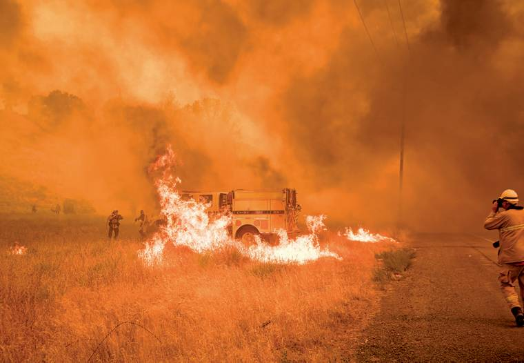

Go to Blazes

Firefighters struggle to control an inferno around one of their trucks on July 1. The so-called Pawnee Fire was first reported June 23 in Spring Valley and burned more than 15,000 acres. A Danish man, Jesper Joergensen, was arrested on arson charges and accused of starting it.